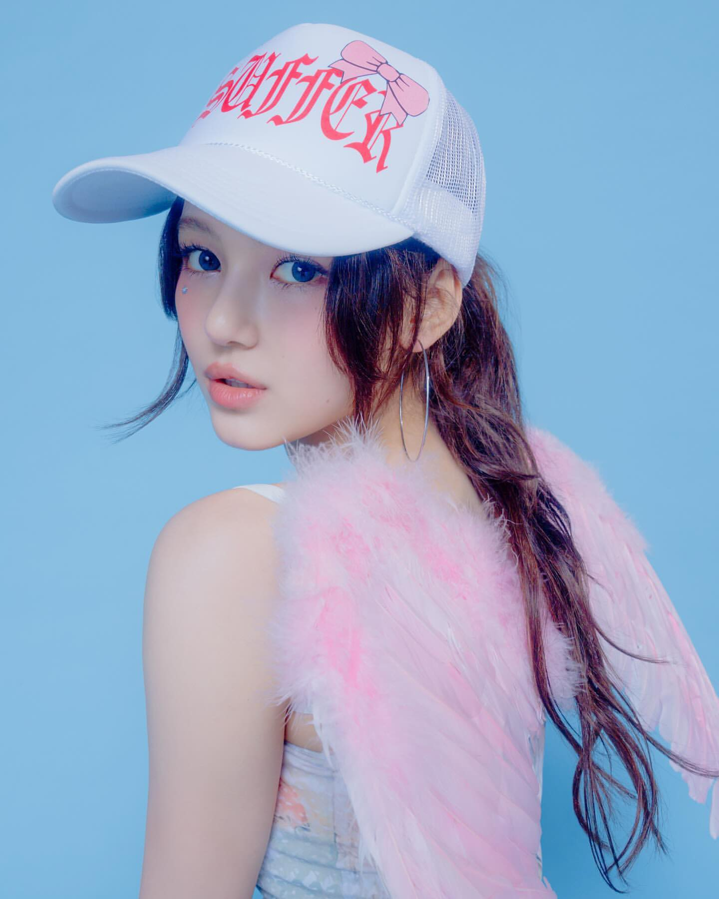
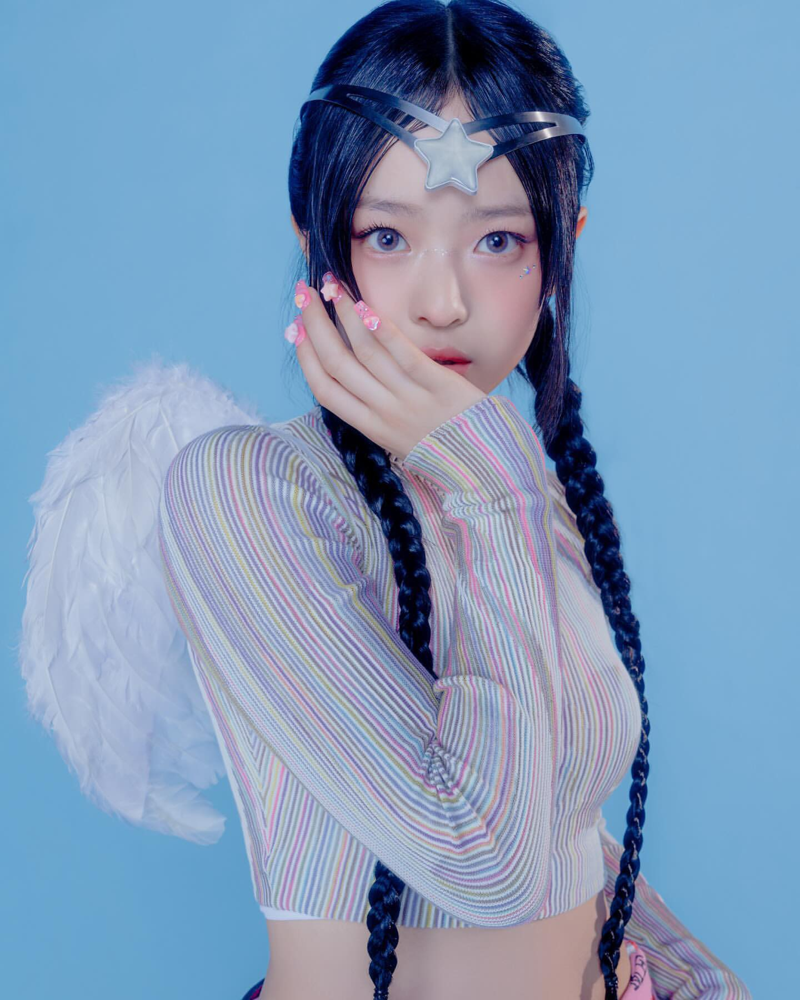
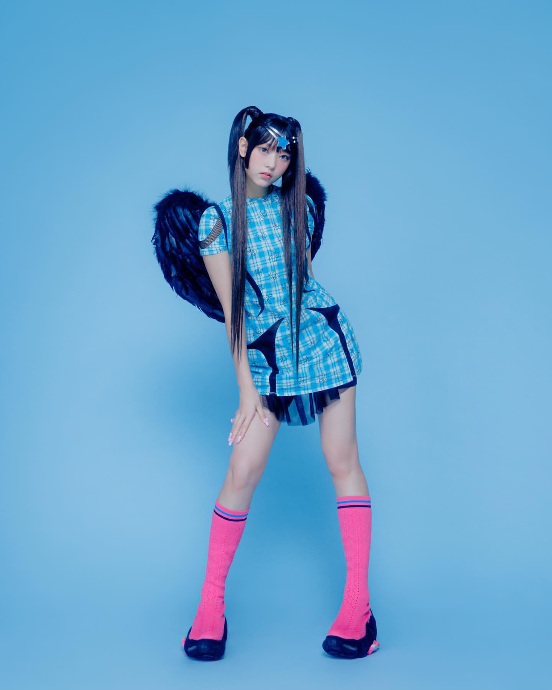

Close-up Shot

1.ระยะใกล้ (Close-up Shot) ภาพระยะใกล้ จะเน้นที่บริเวณใบหน้าของแบบ อาจเห็นแค่ไหล่ หรือระดับอก เน้นสีหน้า แววตา การทอดสายตา ลักษณะของปาก ผิวหน้าและทรงผม สามารถดึงความโดดเด่นของดวงตา และใบหน้าได้เป็นอย่างดี
Half Shot

2.ครึ่งตัว (Half Shot) เป็นระยะที่จะแบ่งครึ่งช่วงตัวด้านบนของแบบ นั่นคือ ถ่ายตั้งแต่ศีรษะถึงแนวเอว ฉากหลังจะถูกลดบทบาทไป เป็นการถ่ายที่เน้นแบบอย่างชัดเจน ระมัดระวังในการตัดส่วนใดของอวัยวะร่างกายของแบบ โดยเฉพาะแขนและมือ ควรถ่ายให้เห็นส่วนโค้งของหัวไหล่ทั้งสองข้าง
Full Shot

3.เต็มตัว (Full shot) คือ การถ่ายภาพบุคคลที่เห็นทั้งตัว ตั้งแต่ศีรษะจนถึงปลายเท้า โดยไม่ให้ส่วนใดส่วนหนึ่งของร่างกาายขาดหายไป อย่าให้ศีรษะและส่วนปลายเท้าชิดติดขอบภาพมากเกินไป